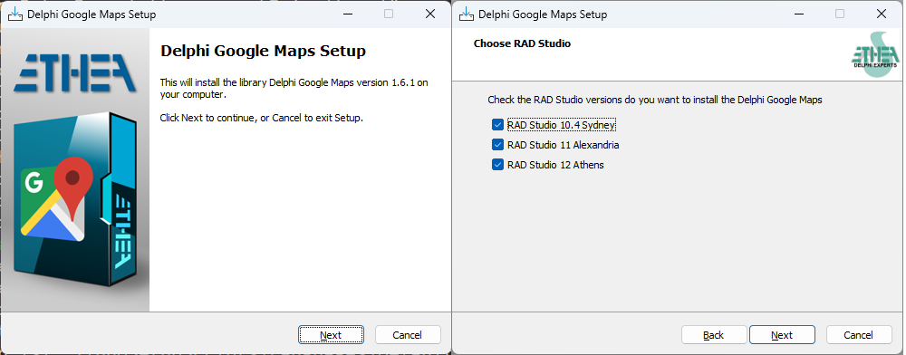
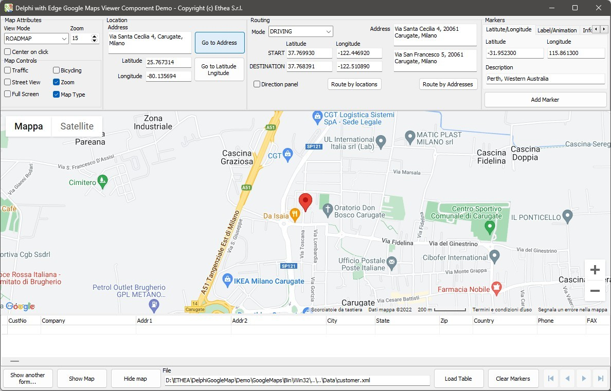
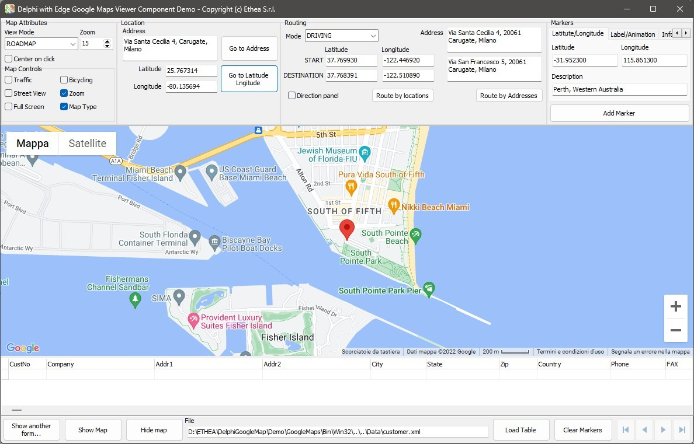
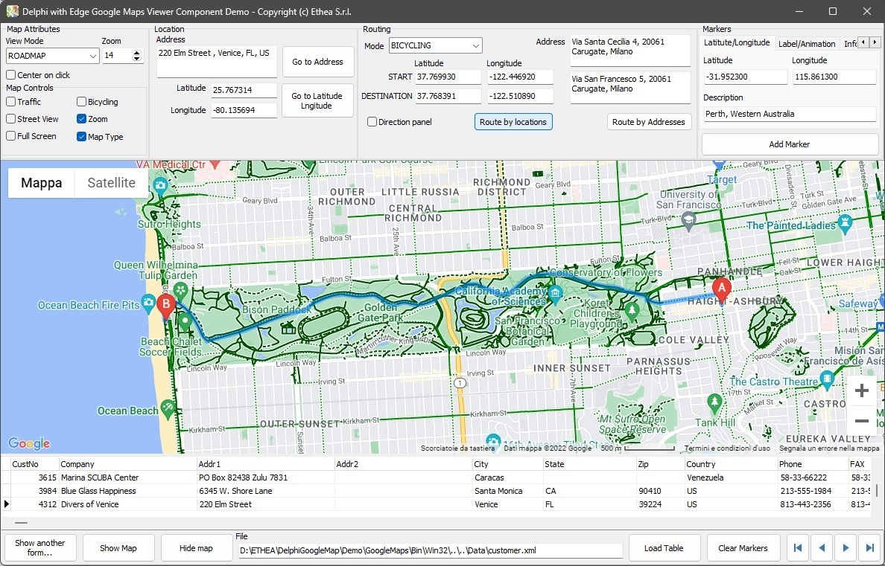
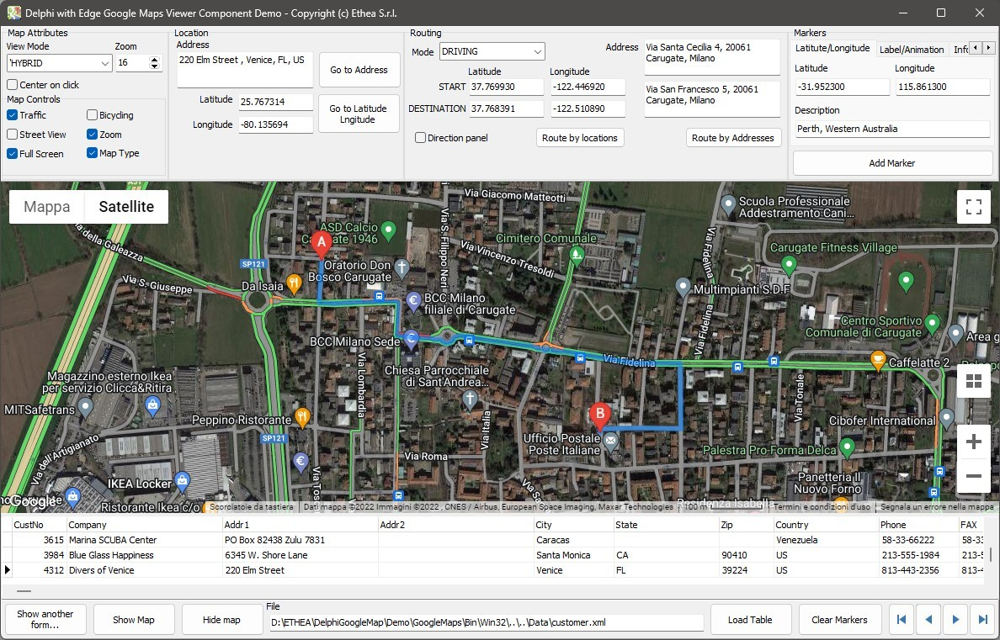
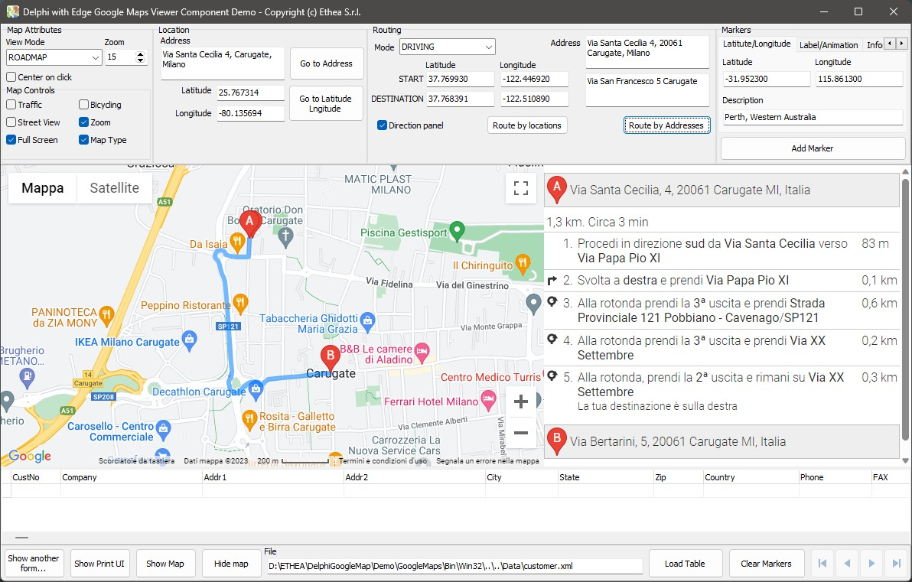
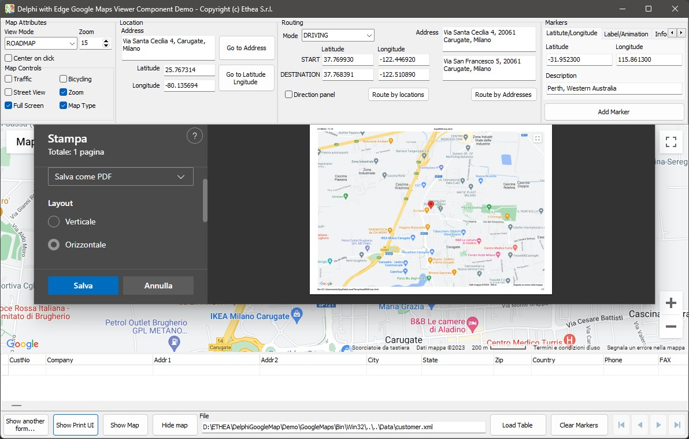
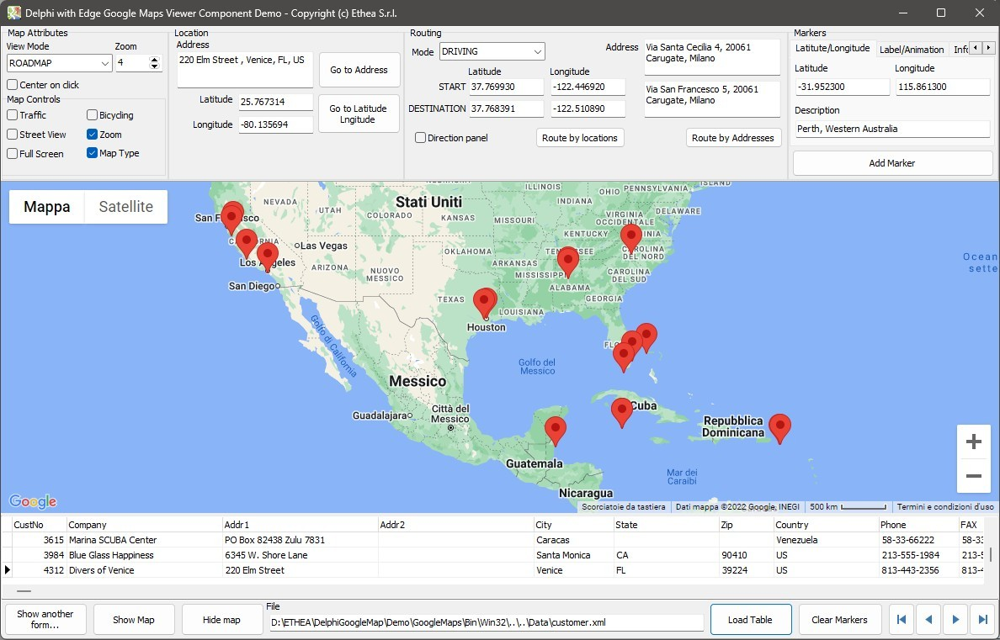

TEdgeGoogleMapViewer: a Delphi “WebView2” Component to View Google Map with integrated Routing and Markers Support
| Component | Description |
|---|---|
| TEdgeGoogleMapViewer is a Delphi wrapper on “WebView2” Component that adds many Google Maps features like Routing and Markers Support (only for VCL). You can setup attributes of the components to see the Google Maps reacts to your changes. |
From 1.6.1 version a new “Installer” read-to-use is located in the Release area: Download the Installer.
The Installer automatically detect your Delphi versions, install sources, build and install packages and add source paths.

The library is also published on delphi.dev as the package EtheaDev.DelphiGoogleMap (Delphi 10.4 to 13, Win32 and Win64): you can install it with DPM, the Delphi Package Manager, as an alternative to the Setup. From the IDE, right click on your project in the Project Manager and choose Manage DPM Packages, or from the command line:
dpm install EtheaDev.DelphiGoogleMap <path of your project>.dproj
DPM downloads the package, builds it for the Delphi version and the platforms of your project and adds it to the project. DPM also copies WebView2Loader.dll (Win32 or Win64) next to the executable of your project.
It's very easy to use Google Maps API directly from Delphi Code, settings Component properties or invoking methods, for example:
//Goto Address Example
EdgeGoogleMapViewer.GotoAddress(MemoAddress.Lines.Text);
//Goto Latitude/Longitude Example
var
Location: TLatLng;
begin
Location.Latitude := TEdgeGoogleMapViewer.TextToCoord(Latitude.Text);
Location.Longitude := TEdgeGoogleMapViewer.TextToCoord(Longitude.Text);
EdgeGoogleMapViewer.GotoLocation(Location);
//Setting Map View Mode
EdgeGoogleMapViewer.MapTypeId := TGoogleMapTypeId(MapTypeIdComboBox.ItemIndex);
The component works in a simple way: builds an html page with some javascript functions inside it and loads it into the browser (NavigateToString), so the Delphi component can call those javascript functions inside the component methods, calling ExecuteScript(ScriptCommand) method of the TEdgeBrowser. If you want to analyse the content of the page, put a break-point into TEdgeGoogleMapViewer.ShowMap at this line:
NavigateToString(HTMLString);
If you want to see how the component calls a javascript function inside the page, look for example at the method “GotoAddress” (strings passed to javascript must always be encoded with JSQuotedStr):
procedure TEdgeGoogleMapViewer.GotoAddress(const Address: string);
var
ScriptCommand: String;
begin
FAddress := Address;
if FAddress = '' then
HideMap
else if not MapVisible then
ShowMap(FAddress)
else
begin
ScriptCommand := Format('codeAddress(%s)',[JSQuotedStr(ClearAddressText(Address))]);
ExecuteScript(ScriptCommand);
end;
end;
You can extend the component with any functionality you can execute at javascipt level, adding the function into the code, in the method “GetHTMLScript” that collect all the Javascript functions, or you can add your personal javascript code in the event “OnGetJavascript”. The event receives the final javascript code (no Format placeholders), so write it as plain javascript (a % is written as %, not %%):
procedure TformMain.EdgeGoogleMapViewerGetJavascript(ASender: TObject;
var AJavascript: string);
begin
AJavascript := AJavascript + sLineBreak +
' function IsEven(n) { return n % 2 === 0; }';
end;
Look at the GoogleAPI documentation if you need more functionality and please make a pull request to the project.
google.maps.MarkerMapColorScheme property (csLIGHT, csDARK) to switch between light and dark map themesPutMarker overload with AInfoTitle parameter for bold header in InfoWindow (uses setHeaderContent API)loading=async and callback for optimal performanceHideMap now navigates to about:blank, properly clearing the map viewNotice that in the same folder of the executable you must place the correct webview2loader.dll (32 or 64 bit) as you can see into Demo\GoogleMaps\Bin\Win32 and Demo\GoogleMaps\Bin\Win64.
Related links: https://www.embarcadero.com/ - https://learndelphi.org/
If you don't want to use the installer, you can build the packages:
Open \Demo\GoogleMaps\GoogleMapsTest.dproj: Build (32 or 64 bit) and Run.
Notice: you need a Google API key to activate the navigation: by default the Demo request to input API before using the component, or you can edit TformMain.EdgeGoogleMapViewerBeforeShowMap event to add your API KEY to the component.
Input Address and click to “Goto Address”:

Input Latutude and Longitude and click to “Goto Latitude/Longitude”

Select Routing Mode “Bicycling”, Select “RoadMap” View Mode, click to “Route by Location”:

Select “Hybrid” View Mode, Activate Traffic and click to “Route by Addreess”:

Check “Direction Panel” and and click to “Route by Addresses”:

Click on “Show Print UI” button:

Load Customer Table, scroll down the table: for every record a Marker is added to the Map. Zoom out map to see all Markers.

No documentation available, but the Demo explain very well the use of the component.
07 Nov 2026 - Version 2.1.0
25 Mar 2026 - Version 2.0.0
05 Nov 2025 - Version 1.6.4
05 Nov 2025 - Version 1.6.3 (deprecated)
07 Sep 2025 - Version 1.6.2
12 Mar 2025 - Version 1.6.1
24 Apr 2024 - Version 1.6.0
21 Aug 2023 - Version 1.5.0
29 Nov 2022 - Version 1.4.0
15 Sep 2022 - Version 1.3.1
09 Apr 2022 - Version 1.3.0
07 Dec 2021 - Version 1.2.0
02 Nov 2021 - Version 1.1.0
24 Sep 2021 - Version 1.0.0